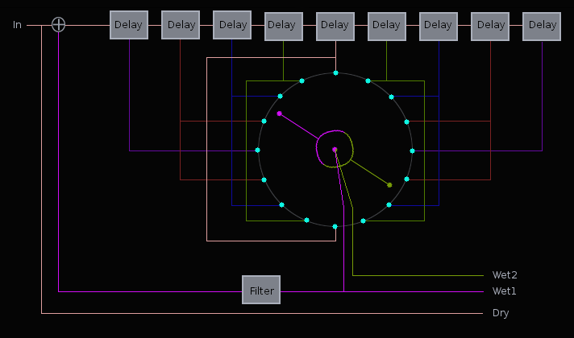

Scanner

| Home | Contents | Synth Catalog | Previous: Rumklang Reverb | Next: Tremolo |
Scanner Phaser
The typical method for adding vibrato to electronic organs is to modulate the master oscillator. This however is impractical where the master oscillator is an electric motor, such as with early Hammond organs. To solve this problem Hammond developed an ingenious "Post Vibrato" device. At the time the only practical way to delay and audio signal was via inductor circuits. Each circuit produced a very short fixed delay. Hammond used a cascade of these delays with taps between each circuit. Each tap produced progressively longer delay times. The taps were connected to small metal plates arranged in a circle. A rotating "scanner" arm picked up each tap signal as it passed by. Effectively Hammond produced a mechanical phase shifter. HammondWiki
The design of Scanner was influenced by the Hammond device but does not pretend to emulate it.Certain aspects are not modeled:
- Unequal delay times due to component variations.
- Crosstalk between adjacent plates is only partially modeled.
- Feedback.
- Second "scanner" arm.
- Alternate scanner waveshape.
- LFO Freq - scanner frequency in Hertz.
- LFO Wave -
- LFO Depth - Effectively the extent of rotation of the scanner arm. For low values the scanner does not complete a full circle.
- LFO External - Amount of external control signal applied to arm position.
- Delay - Delay time for each fixed delay in milliseconds. Total delay time is delay*9.
- Feedback - Amount of scanner arm one feedback.
- Lowpass - Feedback filter cutoff in Hertz.
- Mixer Dry - Dry signal output mix.
- Mixer Wet1 - Scanner arm 1 output mix.
- Mixer Wet2 - Scanner arm 2 output mix.
Buses:
- inbus - Audio input.
- outbus1 - Scanner 1 output (includes dry signal).
- outbus2 - Scanner 2 output (includes dry signal).
- xbus - External control input.
- lfobus - Internal LFO output.
Parameters:
- scanRate - Scanner LFO frequency.
- wave - Scanner LFO waveshape.
- 0.0 - positive slope sawtooth
- 0.5 - triangle
- 1.0 - negative slope sawtooth
- delay - Fixed tap delay time in milliseconds. 0.00 <= delay <= 0.05
- modDepth - LFO amplitude 0.0 <= modDepth <= 1.0
- feedback - Scanner arm 1 feedback amount. -1.0 < feedback <= +1.0
- lowpass - Feedback filter cutoff in Hertz.
- xmodDepth - External control signal depth.
- dryMix - Dry signal output gain.
- wet1Mix - Scanner 1 output gain.
- wet2Mix - Scanner 2 output gain.
| Home | Contents | Synth Catalog | Previous: Rumklang Reverb | Next: Tremolo |